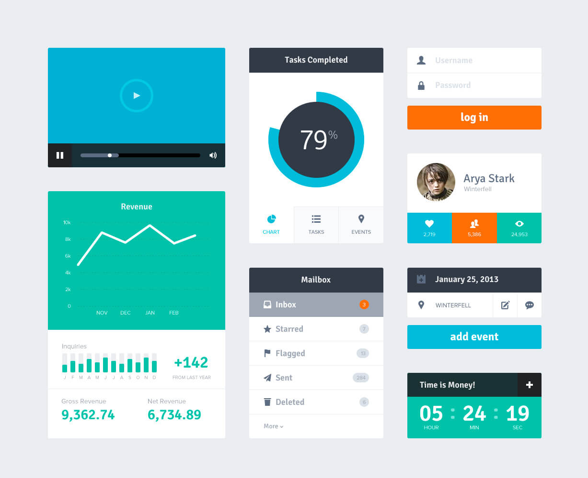
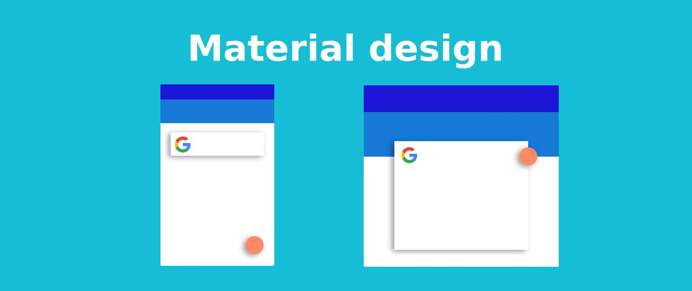

Le Flat Design est un style de desing de d'interface graphique visant le minimalisme. Il se base des design de formes simples de couleurs unies et vives.
Il amène en plus de son design certains atout au niveau du developpement. Il permets de faciliter l'adpativité de la page web au niveau de l'interface et des images.

Ce design est arrivé en opposiotn au design dit "réaliste" et "détaillé". Il élimine le superflus pour ne garder que l'essentiel. Il a souvent été critiqué pour son manque d'érgonomie,
le manque de détail l'ayant rendu confus. Malgré tout, il est largement utilisé de nos jours.
Le Material Design a été introduit par Google en 2014. Il dérive du Flat Design dans le sens où il se base sur lui en se distinguant pas de petit détail.
La différence principale étant que là où le Flat Design se contente d'être intuitif, le Material Design mais en évidence les actions possibles. Il présente aussi chaque élément
comme une feuille superposée aux autres grâce à un jeu d'ombres réalistes.
